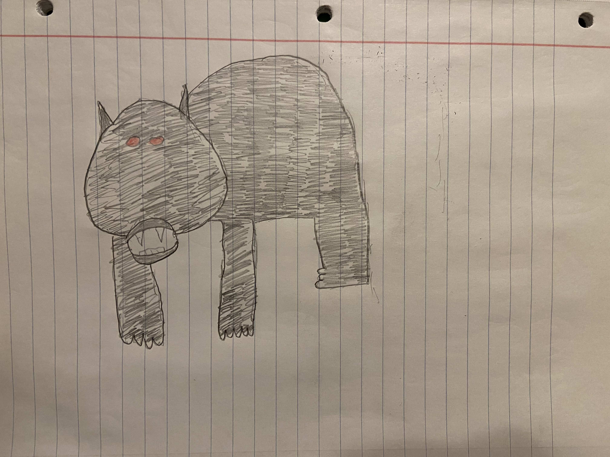
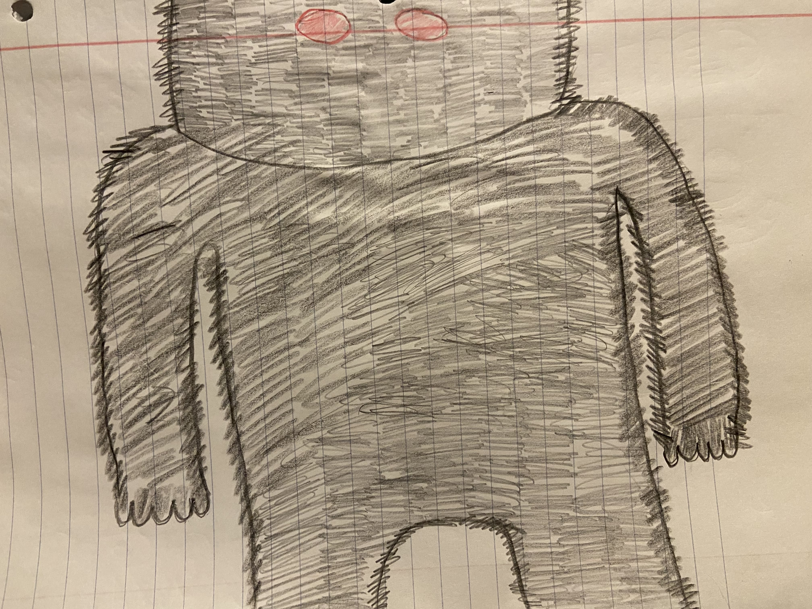

Otherwise known as the Missouri Monster, Momo is 7 foot-tall, covered in dark hair that emits an awful stench. The most famous sighting took place on July 11, 1972. Two young boys were playing in their backyard one day and their older sister heard a scream. She looked out the window and saw a dark-haired man-like creature holding what looked like a deceased dog.
Following the sighting, more people reported seeing Momo along the Mississippi River. Eventually, a 20-person squadron was even formed to kill the monster, but he was never found. Those who have seen Momo claim he lets out a horrendous low growl and his fur is so shaggy it covers his face.
Described as a large bear-sized monster with glowing red eyes and prominent horns, the Ozark Howler is believed to be an omen of death. The creature is most well known for its horrifying cry, described as a mix of a wolf’s howl, an elk’s bugle and the laugh of a hyena.
The first known sighting of the Ozark Howler took place in the early 1800s between the creature and Daniel Boone. According to the legend, Boone shot the monster, but it’s unclear whether he kept it as a trophy.
Also known as the “Booger Dog,” the Nixa Hellhound gained notoriety when somebody called a Springfield radio station claiming they had seen the creature roaming around Nixa. One person who has seen it, claims the beast looks like a mix of a deer and a dog. Others have described the Nixa Hellhound as a hybrid fox/wolfman.
Click on the images below: